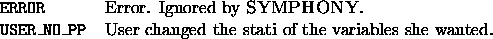

int user_logical_fixing(void *user, int varnum, var_desc **vars,
double *x, char *status)
Logical fixing is modifying the stati of variables based on logical implications derived from problem-specific information. In this function the user can modify the status of any variable. Valid stati are: NOT_FIXED, TEMP_FIXED_TO_LB, PERM_FIXED_TO_LB, TEMP_FIXED_TO_UB and PERM_FIXED_TO_UB. Be forewarned that fallaciously fixing a variable in this function can cause the algorithm to terminate improperly. Generally, a variable can only be fixed permanently if the matrix is full at the time of the fixing (i.e. all variables that are not fixed are in the matrix). There are no default options.

